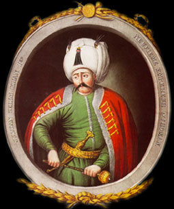

|
 |
YAVUZ SULTAN SELİM Babası II. Bayezid, annesi Gülbahar Hatun'dur. Tahtı devraldığında 2.375.000 km2 olan Osmanlı topraklarını sekiz yıl gibi kısa bir sürede 2,5 kat büyütmüş ve ölümünde imparatorluk topraklarının 1.702.000 km2'si Avrupa'da, 1.905.000 km2'si Asya'da, 2.905.000 km2'si Afrika'da olmak üzere toplam 6.557.000 km2'ye çıkarmıştır.[3] Padişahlığı döneminde Anadolu'da birlik sağlanmış; halifelik Abbasilerden Osmanlı Hanedanına geçmiştir. Ayrıca devrin en önemli iki ticaret yolu olan İpek ve Baharat Yolu'nu ele geçiren Osmanlı, bu sayede doğu ticaret yollarını tamamen kontrolü altına almıştır. Selim, tahta babası II. Bayezid'e karşı darbe yaparak çıkmıştır. Şehzade Selim, tahta çıkmadan önce vali olarak Trabzon'da görev yapmıştır. Yavuz Sultan Selim'e kızını vermiş olan Kırım Hanı Mengli Giray, ona askeri destek sağlayarak tahta geçmesine yardım etmiştir. 1512'de tahta çıkan Sultan Selim, Eylül 1520'de Aslan Pençesi (Şirpençe) denilen bir çıban yüzünden henüz 49 yaşında iken vefat etmiştir. |